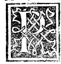

DEDICATION¶
Epistle Dedicatory to His Dearest Disciples and Pupils—Cesare dal Sasso, Cera del Cera, Rainer Francesco di Pippo, Bernardino and Marsilio da Monte, Girolamo del Fecciarino, and Companions of Borgo Sansepolcro, Worthy Stonemasons and Zealous Followers of the Sculptural and Architectural Art—by Fra Luca Pacioli, Their Fellow Countryman of the Order of Friars Minor and Professor of Sacred Theology.

Having been entreated by you many times that, beyond the practical rules of Arithmetic and Geometry which I have already given you, I should also bestow upon you some rule and norm whereby you might attain your desired goal in Architecture, I cannot refuse—even though I am presently overburdened for the common utility of present and future generations in seeing our mathematical works through the printing press (in procincto de loro impressione)—to satisfy your humane request, if not in full, at least in that part which I know to be most necessary for your craft.
1. Promise of a Full Treatise on Perspective from Piero della Francesca, Lorenzo da Lendinara, and Giovan Marco Canozi
Seeing that, just as you have always delighted in exercising yourselves with every study in other commendable arts, so you are disposed with even more ardent desire toward Architecture, I have set aside every other undertaking to satisfy you at least in part—reserving a complete treatment of this art (nay, science!) for a time of greater leisure with the help of the Most High, since it is truly a matter for the tragic buskin (materia da coturno e non da sciocco) and not for a fool.
I beg you in the meantime not to find the wait tedious while working with this present compendium; and unless worse befalls us, I hope soon to satisfy you in full, and together with Architecture I promise to give you a complete knowledge of Perspective (piena notitia de Prospectiva) by means of the documents of our fellow countryman and contemporary, the Monarch of that faculty in our times, Master Piero della Francesca (Maestro Petro de’ Franceschi), of which I have already made a most worthy compendium and which we have thoroughly mastered; and also through the teachings of his brother-in-art Master Lorenzo Canozi of Lendinara (Maestro Lorenzo Canozo da Lendenara), who was likewise supreme in that faculty in his day, as his famous works in intarsia and painting demonstrate everywhere—in the choir and sacristy of the Basilica del Santo at Padua, at the Ca’ Grande [Santa Maria Gloriosa dei Frari] in Venice, and in many other places—as well as through his son Giovan Marco Canozi, my dear compare (mio caro compare), who follows nobly in his father’s footsteps, as is manifest by his works in Rovigo, the worthy choir in our convent at Venice, the well-designed fortress of Mirandola, and the hydraulic screw-machines (edifitio a vite) he continually operates for dredging canals in Venice. Fare you well, and I commend myself to you all. From Venice, on the Kalends of May, 1509 (*Ex Venitiis Kal. Maii MDIX*).
2. The Threefold Division of Architecture and the Roll of Honor of the Military Captains of Borgo Sansepolcro
To proceed in order, we first divide Architecture into three principal parts:
Sacred Temples (templi sacri), dedicated to the worship of God;
Public and Military Defenses (luoghi deputati ala salute e defensione dele piccole e grandi republiche), fortresses, walls, and engines of war;
Private and Civil Habitations (proprii domicilii), palaces, houses, baths, theaters, and aqueducts that shelter and defend our bodies from harmful elements.
Of the first part—Sacred Temples—one could never say so much that they would not merit still more, as our Vitruvius treats at length.
Of the second part—Military Defense—the discourse would be no smaller, since military machines and dispositions have become almost infinite in our day through the new modes of artillery and warlike instruments (per li novi modi de artegliarie e bellici instrumenti), never imagined by the Ancients! In this martial art our own valiant citizens of Borgo Sansepolcro (li nostri strenui Borghesi), both on foot and on horseback, have shown themselves foremost not only throughout Italy, but wherever the fame of arms has reached:
Antonello da Sansepolcro: Fighting under the banner of the Venetians alongside Duke Federico da Montefeltro of Urbino and Count Carlo da Montone in the Romagna to restore Galeotto Manfredi in Faenza [1477], he was seized by a grave fever after the campaign and ended his life on his way home at Urbino, attended at his deathbed by the Reverend Father Master Ginepro (M. Zinipero) and Fra Ambrogio, my own blood brothers of the same Seraphic Order of St. Francis (miei carnali fratelli del medesimo ordine seraphico). Earlier, in the Kingdom of Naples under King Ferrante of Aragon during the Angevin-Aragonese war, he bore himself so manfully that the King made him and his descendants lords of castles; and later in Lombardy under Duke Francesco Sforza of Milan he was richly rewarded. From him was born the worthy condottiere Alessandro, who served the King, the Florentines, and other powers; and this Antonello endowed in perpetuity the noble Chapel of St. Francis in our convent at Sansepolcro, which his successors have continually enlarged.
Benedetto called Baiardo, and Francesco Pacioli: My close kinsman (mio stretto affine), pupil of the most famous Baldaccio d’Anghiari, was many times Captain General of Infantry: first for King Alfonso of Aragon in the Kingdom of Naples, then for Holy Church under Pope Nicholas V, then for the Florentines at the storming of Volterra [1472], and twice for the Venetians, the last time as Captain General of the entire Levant. While sailing to the relief of Scutari [Shkodër, 1474/1478], he was struck down by dysentery (dal flusso) together with his and my nephew Francesco Pacioli (mio nepote Francesco Paciuolo), and both breathed their last at Ragusa [Dubrovnik].
Gnagni della Pietra and the Disciples of Benedetto Baiardo: This Benedetto trained many valiant constables from among our fellow citizens of Sansepolcro:
Gnagni della Pietra, who at the defense of Scutari against the Turks was wounded in the arm by a poisoned crossbow bolt (veretone tossicato) and soon died; it was he who with a single blow of his billhook (ronca) struck off the head of the traitor Taripauer and slew many of his followers when Taripauer came by treachery to Spalato [Split] to murder the Venetian count-governor and seize the city for the Turks! Paper would not suffice to recount his valor: in the Romagna under Count Jacopo Piccinino he repeatedly proved his speed by running on foot for a full mile alongside swift Barbary horses and Spanish jennets, touching the stirrup with only a single finger! He left behind as a small child his eldest son, the worthy constable Franceschino, whom the Signoria of Venice raised with diligent care and pension, entrusting to him today the free command of the fortress of Trieste.
Messer Franco dal Borgo, Todaro (worthy stipendiaries of the Venetians), and Martinello da Lucca, presently stationed in the garrison of Cyprus.
Andrea Baiardo (blood brother of Benedetto), who died of fever in the service of our Lords the Florentines, having previously served as Captain of Infantry for the Venetians against the Germans in the Trento campaign [Battle of Calliano, 1487]—where, after being falsely accused out of envy and imprisoned for one year and five days, the Most Illustrious Signoria of Venice recognized his complete innocence, released him without penalty, and increased his rank and stipend; and they have continually provided for his surviving sons Matteo (presently captain of the garrison at Asolo in the Bresciano) and Giovanni (at the garrison of Gorizia in Friuli).
I pass over our beloved fellow citizen Vicodolzi, and the constables trained by Benedetto Baiardo: Cincio de Scucola with his three brothers, Buciuolo de Lapegio, and his brother Chiapino (who died at Lepanto in Venetian service), Mancino, Longo, Bartolino and his brother Derrata, as well as captains from other cities trained by him, such as Melo da Cortona (slain at Bagnacavallo in Venetian service and buried at Ravenna), L’Albanosetto, and Giovan Greco dalla Guancia (presently captain of light horse and infantry for the Venetians at Rimini). Of Benedetto Baiardo there survives today a son named Baldarzonio, devoted to civil life with his worthy mother Elisabetta.
Living Knights of the Golden Spur (*Cavalieri Speron d’Oro*) and Captains of Sansepolcro:
Messer Ciriaco Palamides (Criaco Palamides), Knight of the Golden Spur, endowed with the castle and fortress of La Metula by my magnanimous Duke Guidobaldo of Urbino, having served the Florentines with supreme valor in Naples, the Papal States, around Pisa, and in Pistoia during the struggles of the Panciatichi and Cancellieri factions, after beginning his career under the Illustrious Lord of Rimini Roberto Malatesta (who, sent by the Venetians to defend the Church against the Duke of Calabria, won the victory of Campomorto [1482] and died shortly thereafter, being buried with highest honors in St. Peter’s in Rome beneath the two public banners of St. Mark and Holy Church).
Messer Mastino Catani, Knight of the Golden Spur, following the tradition of his father, uncle, and grandfather, all Knights of the Golden Spur.
Messer Martino de’ Cittadini, honored by the House of Montefeltro and created Knight and Lord of the castle of La Massetta by Duke Guidobaldo, and ever held in high esteem by the Florentines.
Messer Gnagni Rigi, Knight of the Golden Spur, who served the Duke of Urbino, the Florentines, and the Lord of Pesaro, and is presently Captain of the Venetian garrison at Cattaro [Kotor].
Messer Mario de’ Servardi with his four worthy sons Cristofano, Piero, Francesco, and Troilo, all men-at-arms, and his comrade Marco d’Agnilo.
Gnagni called Picone with his two dear sons Andrea and Bartolomeo, in Venetian service after distinguishing himself against the Germans [at Cadore, 1508] under the Illustrious Commander Bartolomeo d’Alviano and the Provveditori Messer Giorgio Corner and Messer Andrea Gritti, who commended him before the Venetian Senate so that he was appointed Captain of the garrison of Fiume [Rijeka]; and his nephew Giuliano and Paolo, captain for the Florentines at Livorno.
Finally I mention the valiant constables Bronchino (slain at Citerna for the Vitelli), Goro (at Pistoia), Vitello (slain beneath pikes and billhooks at Pisa for the Florentines), Paolo da Pici (unrivaled in building field fortifications and earthworks at Scutari for the Venetians and at Castellina in Chianti for the Florentines against the Duke of Calabria), and Papia and his nephew Papo di Pandolfo.
3. Discussions on Modern Fortification and the Plan of the Present Treatise
Concerning this second part of Architecture—public defense by walls, counter-walls (antimuri), battlements (merli), mantlets, towers, ravelins (revellini), bastions, turrets (turrioni), and casemates (casematte)—I have many times discoursed and labored with eye and hand alongside both the living and the dead captains mentioned above, and also:
With the Illustrious Messer Gian Giacomo Trivulzio;
With the worthy Florentine ambassador Pier Vettori in the presence of Giovanni Pontano in the palace of the Count of Sarno at Naples;
With the magnificent condottiere Signor Camillo Vitelli of Città di Castello, to whom I lectured for three full years on the sublime volume of our Euclid (legendoli io per anni tre el sublime volume del nostro Euclide);
And in Milan with my particular patron Messer Galeazzo Sanseverino and many times with the Most Excellent Duke Ludovico Maria Sforza.
Because this science of fortification has grown vast in our times on account of modern artillery unknown to Vitruvius—and because the third part of Architecture (palaces, houses, theaters, baths, and aqueducts, treated by Vitruvius and by Frontinus in De aquaeductibus, as seen in the ancient Roman arches toward Marino directed to the Baths of Diocletian, and the baths of Pozzuoli and Viterbo) also requires a large volume—we reserve both for our future work.
Here we shall treat of a fourth cross-cutting discipline indispensable to all three parts of Architecture and above all to you stonemasons and sculptors who emulate Phidias and Praxiteles (whose marble horsemen on Monte Cavallo [the Quirinal Hill] in Rome render them immortal): namely the geometric proportions of the human body, of marble columns, capitals, bases, stylobates, architraves, friezes, cornices, the ancient Roman alphabet, and the Temple Portal (*:term:`Porta Speciosa <porta-speciosa>`*).
For as Vitruvius writes in the Preface to his fifth book:
Id autem in architecturae conscriptionibus non potest fieri, quod vocabula ex artis propria necessitate concepta in consueto sermone obiiciunt sensibus obscuritatem… (“In architectural writings, however, this cannot be done, because the technical terms conceived out of the special necessity of the art cast obscurity upon the understanding in ordinary speech…”)
Therefore, dividing our discourse into three succinct parts—(1) Human Proportion, from which every architectural measure (braccio, passo, piede, palma, cubito, digito, testa) derives; (2) Round Columns, Capitals, Bases, Stylobates, and Entablatures; and (3) their union in the Porta Speciosa (modeled on the gate of Solomon’s Temple in Jerusalem foretold by the prophet Ezekiel) and the Roman Alphabet—I shall endeavor to make Vitruvius’s obscure terms clear and open to every good stonemason who possesses some skill in drawing and in the use of the level/square (*libella*) and compass (*:term:`circino <circino>` ouer sexto*), that is, the straight line and the curved line.